Le rapport pour votre médecin
Préparez votre rendez-vous : Visitio lit l’app Santé et crée un PDF clair avec courbes, minimum, moyenne et maximum. Vos données restent sur l’iPhone.
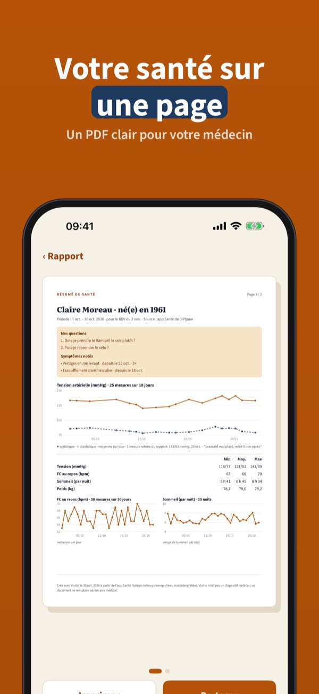
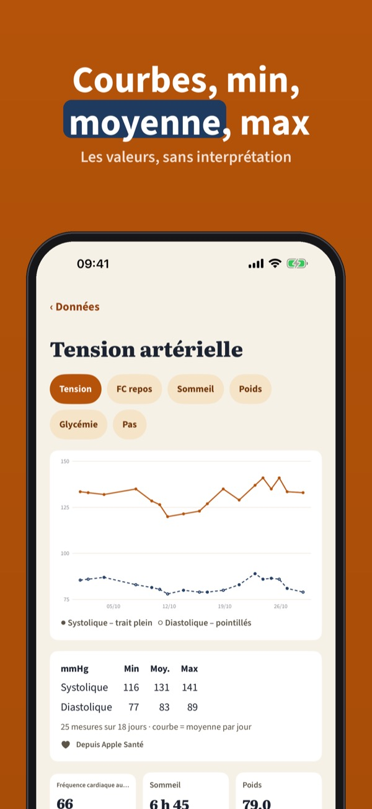
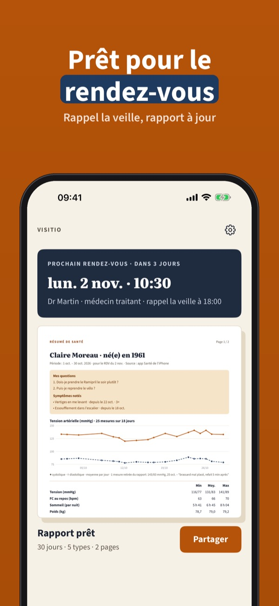
Visitio prépare un résumé de santé clair pour votre médecin. Choisissez la période et les données : tension, pouls au repos, sommeil, poids, glycémie, médicaments. Le PDF est prêt en quelques secondes.
Un type de données sur 30 jours, les notes et le PDF s’utilisent sans achat. Visitio Plus est un achat unique qui débloque tous les types, 90 jours, la comparaison, les modèles et l’historique. Sans abonnement.
Visitio n’est pas un dispositif médical. Il affiche vos valeurs telles qu’enregistrées, sans diagnostic, sans interprétation et sans conseil. Parlez de vos valeurs avec votre médecin.
Terms of Use (EULA): https://www.apple.com/legal/internet-services/itunes/dev/stdeula/
Privacy: https://baytechbv.github.io/privacy/visitio-eu/
Il PDF per la visita medica
Prepara la visita: Visitio legge l’app Salute e crea un PDF chiaro con grafici, minimo, media e massimo. I tuoi dati restano sull’iPhone.
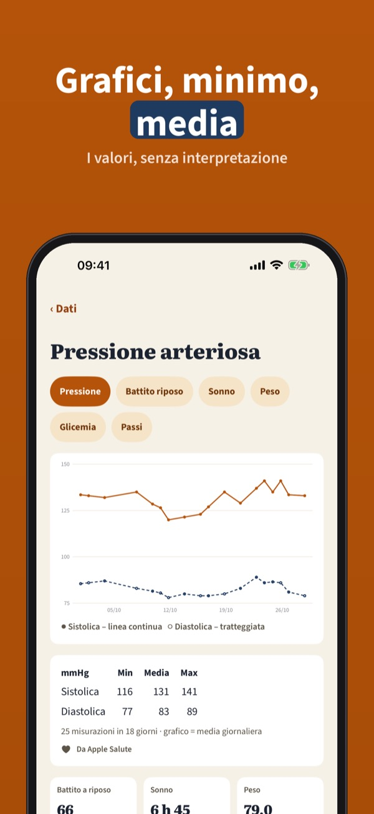
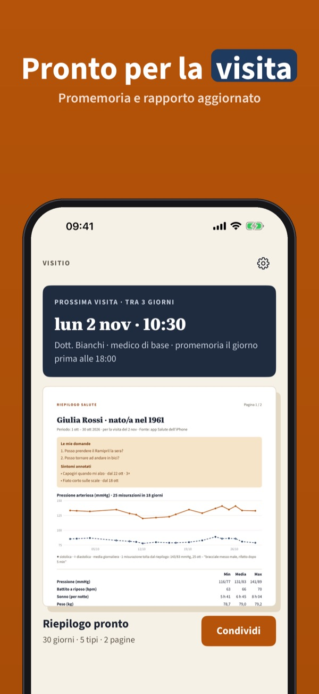
Visitio prepara un riepilogo chiaro per il tuo medico. Scegli periodo e dati: pressione, battito a riposo, sonno, peso, glicemia, farmaci. Il PDF è pronto in pochi secondi.
Un tipo di dati per 30 giorni, le note e il PDF si usano senza acquisto. Visitio Plus è un acquisto unico che sblocca tutti i tipi, 90 giorni, il confronto, i modelli e lo storico. Nessun abbonamento.
Visitio non è un dispositivo medico. Mostra i valori come sono registrati, senza diagnosi, interpretazione o consigli. Parla dei tuoi valori con il medico.
Terms of Use (EULA): https://www.apple.com/legal/internet-services/itunes/dev/stdeula/
Privacy: https://baytechbv.github.io/privacy/visitio-eu/
Informe PDF para tu médico
Prepara tu cita: Visitio lee la app Salud y crea un PDF claro con gráficos, mínimo, media y máximo. Tus datos se quedan en el iPhone.
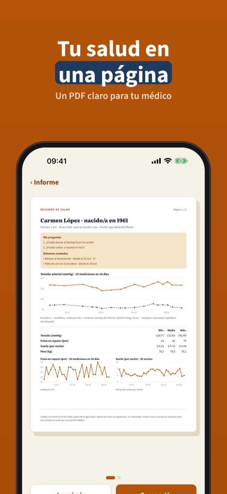
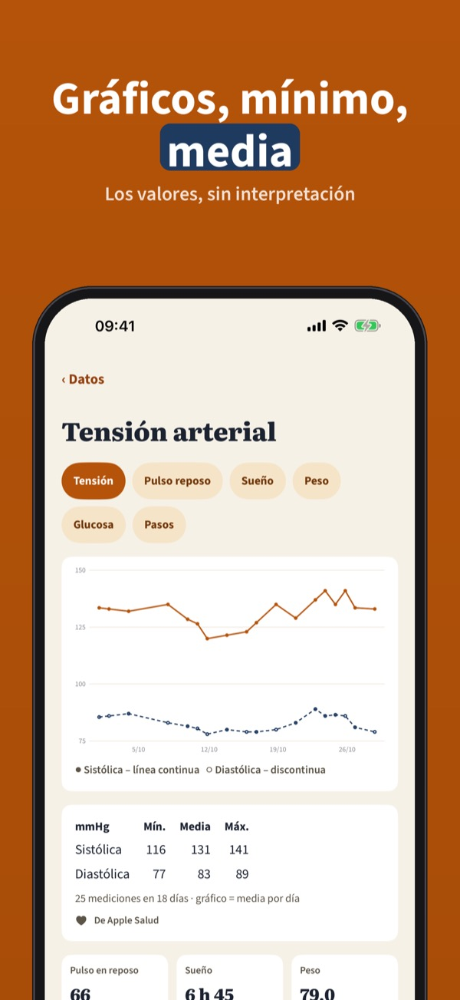
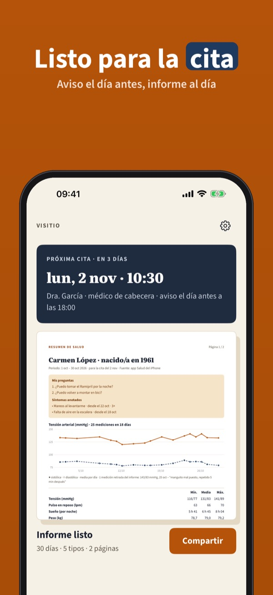
Visitio prepara un resumen de salud claro para tu médico. Elige el periodo y los datos: tensión, pulso en reposo, sueño, peso, glucosa, medicamentos. El PDF está listo en segundos.
Un tipo de datos durante 30 días, las notas y el PDF se usan sin compra. Visitio Plus es una compra única que desbloquea todos los tipos, 90 días, la comparación, las plantillas y el historial. Sin suscripción.
Visitio no es un producto sanitario. Muestra tus valores tal como están registrados, sin diagnóstico, interpretación ni consejos. Habla de tus valores con tu médico.
Terms of Use (EULA): https://www.apple.com/legal/internet-services/itunes/dev/stdeula/
Privacy: https://baytechbv.github.io/privacy/visitio-eu/
PDF-rapport voor je huisarts
Bereid je afspraak voor: Visitio leest de Gezondheid-app en maakt een heldere PDF met grafieken, minimum, gemiddelde en maximum. Alles blijft op je iPhone.
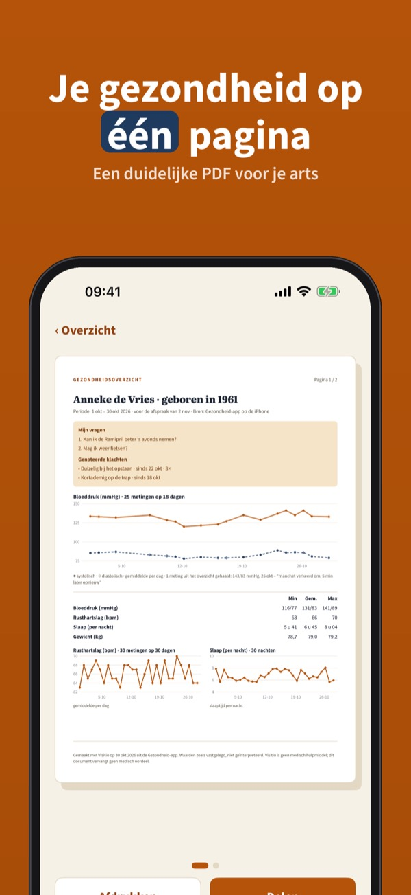
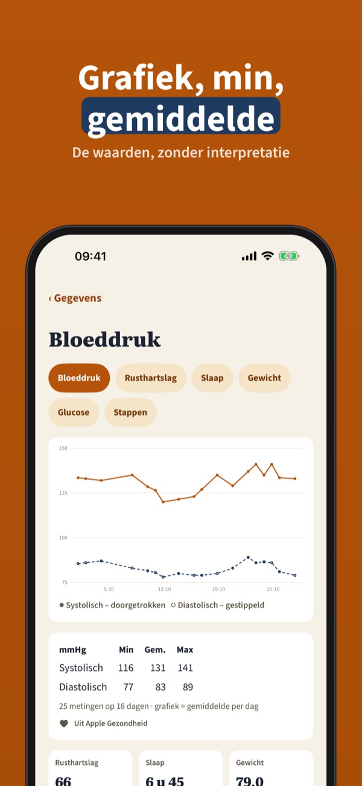
Visitio maakt een helder gezondheidsoverzicht voor je arts. Kies de periode en de gegevens: bloeddruk, rusthartslag, slaap, gewicht, glucose, medicijnen. De PDF is in seconden klaar.
Eén gegevenstype over 30 dagen, notities en de PDF gebruik je zonder aankoop. Visitio Plus is een eenmalige aankoop voor alle typen, 90 dagen, vergelijken, sjablonen en geschiedenis. Geen abonnement.
Visitio is geen medisch hulpmiddel. Het toont je waarden zoals ze zijn opgeslagen, zonder diagnose, interpretatie of advies. Bespreek je waarden met je arts.
Terms of Use (EULA): https://www.apple.com/legal/internet-services/itunes/dev/stdeula/
Privacy: https://baytechbv.github.io/privacy/visitio-eu/
Podsumowanie dla lekarza
Przygotuj się do wizyty: Visitio czyta aplikację Zdrowie i tworzy czytelny PDF z wykresami, minimum, średnią i maksimum. Dane zostają na iPhonie.
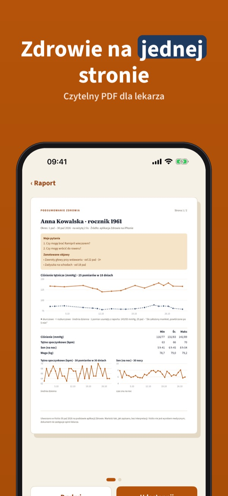
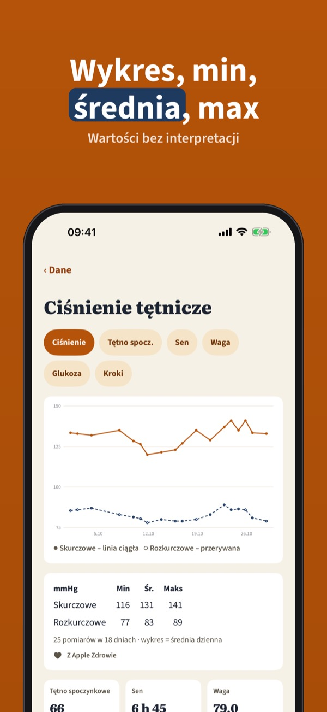
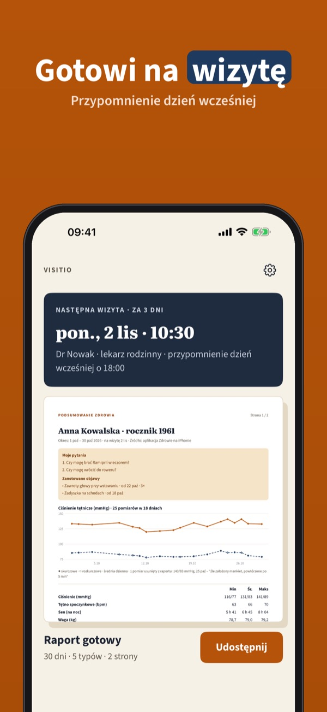
Visitio przygotowuje czytelne podsumowanie zdrowia dla lekarza. Wybierz okres i dane: ciśnienie, tętno spoczynkowe, sen, wagę, glukozę, leki. PDF jest gotowy w kilka sekund.
Jeden rodzaj danych z 30 dni, notatki i PDF działają bez zakupu. Visitio Plus to jednorazowy zakup: wszystkie rodzaje danych, 90 dni, porównanie, szablony i historia. Bez subskrypcji.
Visitio nie jest wyrobem medycznym. Pokazuje wartości tak, jak zostały zapisane, bez diagnozy, interpretacji i porad. Omów swoje wartości z lekarzem.
Terms of Use (EULA): https://www.apple.com/legal/internet-services/itunes/dev/stdeula/
Privacy: https://baytechbv.github.io/privacy/visitio-eu/
Übersicht für den Arzttermin
Bereite deinen Termin vor: Visitio liest die Health-App und erstellt ein klares PDF mit Kurven, Minimum, Mittelwert und Maximum. Alles bleibt auf dem iPhone.
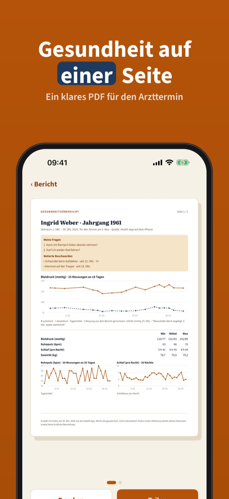
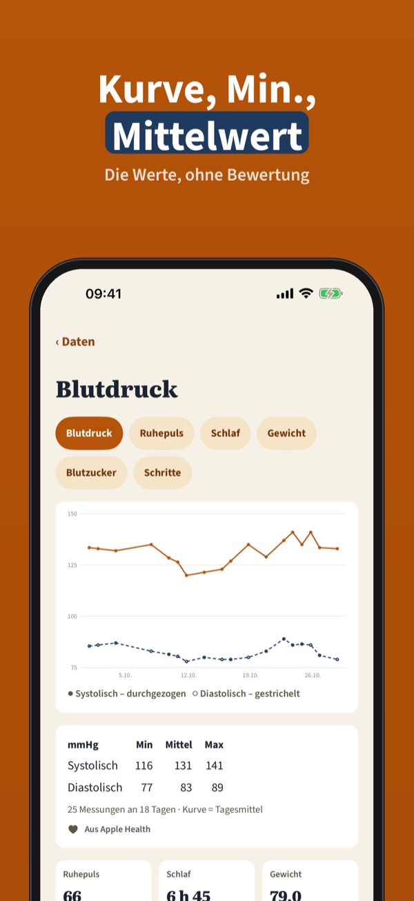
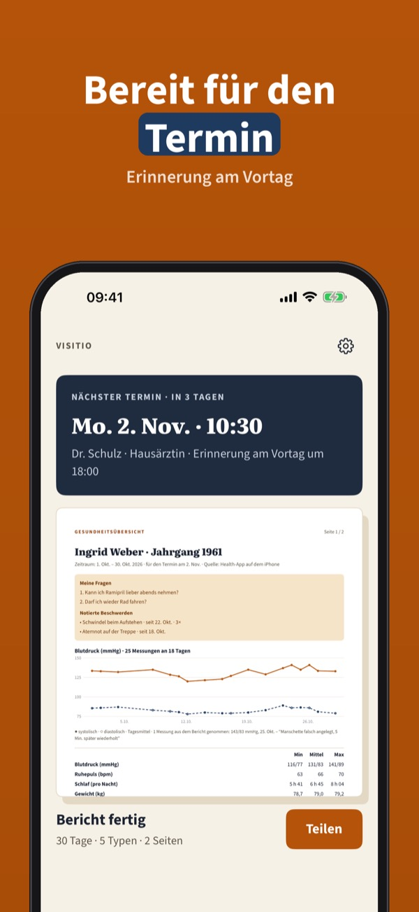
Visitio erstellt eine klare Gesundheitsübersicht für deine Ärztin oder deinen Arzt. Wähle Zeitraum und Daten: Blutdruck, Ruhepuls, Schlaf, Gewicht, Blutzucker, Medikamente. Das PDF ist in Sekunden fertig.
Ein Datentyp für 30 Tage, Notizen und das PDF sind ohne Kauf nutzbar. Visitio Plus ist ein Einmalkauf für alle Datentypen, 90 Tage, Vergleich, Vorlagen und Verlauf. Kein Abo.
Visitio ist kein Medizinprodukt. Es zeigt deine Werte so, wie sie gespeichert sind – ohne Diagnose, Bewertung oder Rat. Besprich deine Werte mit deiner Ärztin oder deinem Arzt.
Terms of Use (EULA): https://www.apple.com/legal/internet-services/itunes/dev/stdeula/
Privacy: https://baytechbv.github.io/privacy/visitio-eu/